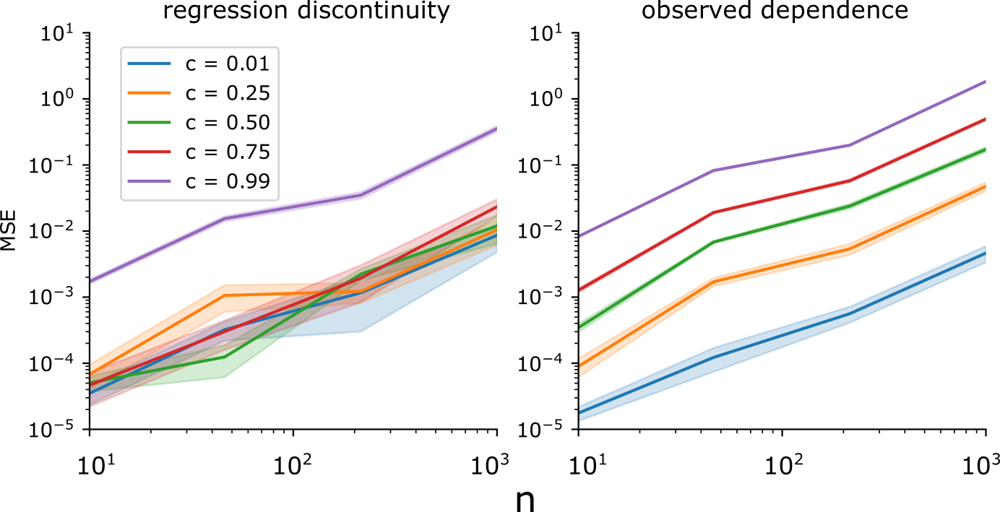

The neuronal credit assignment problem as causal inference
Ben Lansdell, Bioengineering UPenn
St Jude Children's Research Hospital July 22nd 2020
Causality in neuroscience
Fosque et al, Science 2015
Thorsen et al, J Experimental Biology 2004
Causality in neuroscience
Challenges to obtaining causal relationships in neuroscience:
complicated feedback dynamics
hard to control (make targeted interventions)
rarely can fully observe (confounded)
high dimensional (hard to develop intuition)
(Causality in machine learning)
Causation also relates to a number of challenges in machine learning:
Messerli et al, N Engl J Med 2012
Causal models are more robust to changes in environment/distribution: better transfer, generalization
Fairness: strong associations are not causal, and may be unfair/biased/prejudiced
Safety: observational data may not say what happens when we act/intervene/change distributions
Neuroscience, machine learning and causality
Claim: progress in both neuroscience and machine learning can come from explicitly casting problems as causal learning problems
Learning in the brain
Find parameters $w$ that minimize a loss/maximize a reward function, $R$
Learning in the brain
What are the synaptic update rules used by neurons that provide efficient and flexible learning?
Must be:
consistent with known neurophysiology
good enough at learning complicated tasks
The neuronal credit assignment problem
To learn, a neuron must know its effect on the reward function
In spiking neural networks, this means something like:
If, for a given input, a spike increases the reward, the weights leading to that spike should increase
If, for a given input, a spike decreases the reward, the weights leading to that spike should decrease
The problem: noise correlations and confounding
$\Rightarrow$ Viewing learning as a causal inference problem may provide insight
Causality
Defined in terms of counterfactuals or interventions
The causal effect: $\beta = \mathbb{E}(R|H\leftarrow 1) - \mathbb{E}(R|H\leftarrow 0)$
How can we predict the causal effect from observation?
Causality
Defined in terms of counterfactuals or interventions
The causal effect: $\beta = \mathbb{E}(R|H\leftarrow 1) - \mathbb{E}(R|H\leftarrow 0)$
How can we predict the causal effect from observation?
Credit assignment as causal inference
What is a neuron's causal effect on reward, and so how should it change to improve performance?
$$
\beta_i = \mathbb{E}(R| H_i \leftarrow 1) - \mathbb{E}(R| H_i \leftarrow 0)
$$
$\Rightarrow$ How can a neuron perform causal inference?
Credit assignment as causal inference
One solution: Randomization
If independent (unconfounded) noise is added to the system, this can be correlated with reward for an estimate of its reward gradient
In fact, the REINFORCE algorithm correlates reward with independent pertubations in activity, $\xi^i$:
$$
\mathbb{E}( R\xi^i ) \approx \sigma^2 \frac{\delta R}{\delta h^i}
$$
But:
Requires each neuron measures an IID noise source, $\xi^i$, or knows its output relative to some expected output
Only well characterized in specific circuits e.g. birdsong learning (Fiete and Seung 2007)
Causal learning without randomization
An observation: decisions made with arbitary thresholds let us observe counterfactuals
Adapted from Moscoe et al, J Clin Epid 2015
Known as regression discontinuity design (RDD) in economics
Two more observations:
A neuron only spikes if its input is above a threshold
A spike can have a measurable effect on outcome and reward
Suggests regression discontinuity design can be used by a neuron to estimate its causal effect.
RDD for solving credit assignment
Lansdell and Kording, bioRxiv 2019
Inputs that place the neuron close to threshold are unbiased estimate of causal effect
Can relate causal effect to gradients $\Rightarrow$ derive stochastic gradient descent learning rule
Learning trajectories are less biased and converge faster
A larger example

Is this plausible?
It would require:
sub-threshold dependent plasticity
neuromodulator dependent plasticity
Ngezahayo et al 2000, Seol et al 2007
Why spike?
Neurons need to communicate over large distances
Calcium imaging in Hydra. Dupre and Yuste 2017 (Video here: benlansdell.github.io/stjude/#/23)
But computationally, a spiking discontinuity is inconvenient for learning
What are the comptuational benefits of spiking?
With RDD-based learning, spiking is a feature and not a bug
Summary
RDD can be used to estimate causal effects, and can provide a solution to the credit assignment problem in spiking neural networks
Shows a neuron can do causal inference without needing to randomize
Relies on the fact that neurons spike when input exceeds a threshold – spiking is a feature not a bug
Related work
Using causal effect estimators to train large artificial neural networks
Lansdell et al, 'Learning to solve the credit assignment problem', ICLR 2020
Primary motor activity supporting dual-control brain computer interfaces
Lansdell et al, 'Reconfiguring motor circuits for a joint manual and BCI task', IEEE Trans. Neural Systems and Rehabilitation Engineering 2020
Behavioral analysis and neuron tracking in the cnidarian Hydra
(in progress)
Related work
Using causal effect estimators to train large artificial neural networks
Lansdell et al, 'Learning to solve the credit assignment problem', ICLR 2020
Primary motor activity supporting dual-control brain computer interfaces
Lansdell et al, 'Reconfiguring motor circuits for a joint manual and BCI task', IEEE Trans. Neural Systems and Rehabilitation Engineering 2020
Behavioral analysis and neuron tracking in the cnidarian Hydra
(in progress)
Related work
Using causal effect estimators to train large artificial neural networks
Lansdell et al, 'Learning to solve the credit assignment problem', ICLR 2020
Primary motor activity supporting dual-control brain computer interfaces
Lansdell et al, 'Reconfiguring motor circuits for a joint manual and BCI task', IEEE Trans. Neural Systems and Rehabilitation Engineering 2020
Behavioral analysis and neuron tracking in the cnidarian Hydra
(in progress)
Related work
Using causal effect estimators to train large artificial neural networks
Lansdell et al, 'Learning to solve the credit assignment problem', ICLR 2020
Primary motor activity supporting dual-control brain computer interfaces
Lansdell et al, 'Reconfiguring motor circuits for a joint manual and BCI task', IEEE Trans. Neural Systems and Rehabilitation Engineering 2020
Behavioral analysis and neuron tracking in the cnidarian Hydra
(In progress)
(Video: benlansdell.github.io/stjude/#/27)
References
Lansdell B, Kording K, "Spiking allows neurons to estimate their causal effect" biorxiv 2019
Lansdell B, Prakash P, Kording K, "Learning to solving the credit assignment problem" ICLR 2020
Lansdell B, Milovanovic I, Mellema C, Fairhall A, Fetz E, Moritz C, "Reconfiguring motor circuits for a joint manual and BCI task" IEEE Trans. Neural Systems and Rehabilitation Engineering, 2020, 28(1)
Lansdell B, Kording K, "Towards learning-to-learn" Current Opinion in Behavioral Science, 2019, 29, 45-50
Aljadeff Y, Lansdell B, Fairhall A, Kleinfeld D, "Analysis of neuronal spike trains, deconstructed", Neuron 2016, 91(2)
Pang R, Lansdell B, Fairhall A, "Dimensionality Reduction in Neuroscience", Current Biology 2016, 26: R1-R5
Acknowledgments
Konrad Kording (U Penn)
Kording lab
Ari Benjamin
David Rolnick
Roozbeh Farhoodi
Prashanth Prakash
Adrienne Fairhall (UW)
Fairhall lab
Rich Pang
Alison Duffy
Chet Moritz (UW)
Ivana Milovanovic (UW)
Cooper Mellema (UT Austin)
Eberhard Fetz (UW)
RDD as a way for a neuron to solve credit assignment
Lansdell and Kording, bioRxiv 2019
How to test?
Over a fixed time window a reward is administered when neuron spikes
Stimuli are identified which place the neuron's input drive close to spiking threshold.
RDD-based learning predicts an increase synaptic changes for a set of stimuli containing a high proportion of near threshold inputs, but that keeps overall firing rate constant.